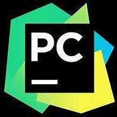
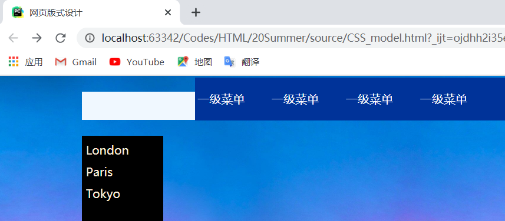

最开始的想法很简单，想拿一个博客的源码改一改，借用一下它的模板。于是我找到一个看似较为简单的模板。
第一版借鉴的模板
显示尝试分析网页源代码，一共不到两千行。最开始用记事本看的。一个个标签匹配，眼睛都快看花了。
于是开始尝试删除，格式相同的保留一个模块。头部信息删除后对展示效果没有影响的语句删掉。经过一番精简，最后代码缩略到 500 行以内。
惊喜地发现 PyCharm 也可以编辑html文件，于是可以将模块按标签收起。分析工作大大加速。
但是，该模板的CSS是外部链接，本地没有效果。于是开始了自己写CSS漫长的道路。
与课堂有回放功能，这个阶段就是在复现课件的例子。
也多亏了老师的课件中例子简单实用，易于复现。
过程插曲： PyCharm 是真删除 ，删除得很彻底。 在发现使用 PyCharm 也可以进行网页编辑并且具有自动保存功能后，我果断地使用了它。 |
 |
再写网页的整个过程中遇到了这样那样的问题，基本依靠百度都可以解决。实在解决不了的就换个方法。要是还解决不了，就放弃，（何必刁难自己呢，笑）

设置网页背景，控制其根据页面缩放
CSS实现自适应不同大小屏幕的背景大图的两种方法
调整背景透明度，不能浪费好看的背景
html通过css来设置半透明背景
设置顶部导航栏
CSS+HTML 顶部导航栏实现
高级的左侧可收缩的菜单
左侧菜单可以收缩.html
未能成功实现 css如何实现背景透明，文字不透明？
段落的设置
CSS设置行间距和字间距
球球了，孩子想要一个 五星好评 , 您的一次肯定是对孩子莫大的鼓励！